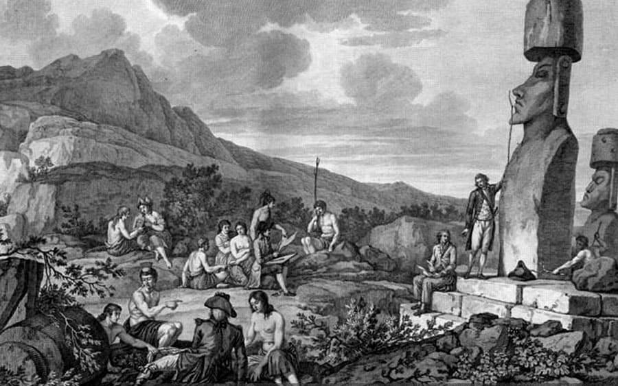

La orden del rey era clara: recorrer, explorar y conquistar la isla. Y así lo hicieron, la isla fue conquistada y poblada. Pasó por una época de prosperidad en la que la población creció y llegó a estar entre los 7.000 y 10.000 habitantes. Pero Este crecimiento expansivo trajo también una sobreexplotación de recursos naturales que comenzó con la gran crisis de Rapa Nui. Faltaba desde alimentos hasta materia prima para permitir cultivar y pescar. Todo fue una cadena de desastres. La falta de alimentos hizo que los habitantes de la isla se rebelaran contra la jerarquía comenzaran una serie de guerras. En el siglo XVII la crisis estaba en su punto más alto.
La llegada de Europeos
En 1986 el capitán Davis, de origen Británico, divisó a lo lejos tierra y pensó inmediato haber encontrado un nuevo continente, pero por la distancia no logró llegar y volvió a Gran Bretaña, pero marcó ese lugar en su mapa, que por muchos años fueronconocido como la Tierra de Davis.A principios del siglo XVIII, en 1721 exactamente, Holanda envió a su navegante Jakob Roggeveen a recorrer los mares del mundo y encontrar la región misteriosa llamada “tierra de Davis”. El 6 de abril de 1722 Jackob dio por fin con la isla. Dado que el 6 de abril los cristianos celebran Pascua de Resurrección, decidió nombrarla Isla de Pascua.

Los europeos no se interesaron por la isla, lo que ellos de verdad buscaban era un nuevo continente, no una isla. Este episodio sirvió solamente para que la isla tuviera el nombre que tiene.
En 1805 europeos volvieron a la isla y secuestaron a nativos para convertirlos en esclavos y llevarlos a los distintos lugares de américa en los que estaban colonizando. Entre 1.000 y 2.000 esclavos (hombres, niños y mujeres) fueron capturados.
Esto trajo mas guerras, violencia y consequentemente muerte a la isla. Muchos de estos esclavos eran liberados luego de un tiempo y cambiados por nuevos isleños. Esto trajo un nuevo problema. Los isleños que volvían traían tuberculosis, lo que desató una epidemia que redujo la población. Fue tan grave, que de 4.000 habitantes se llegó a sólo 1.000 en unos años.
Luego de los colonizadores venía el turno de los misioneros. Que no fueron muy bien recibidos por los isleños. Se quedaron tan solo 3 años en la isla y no aguantaron mas tantos conflictos y guerras. Se llevaron muchisimos nativos con ellos en su partida.
Con todo ese exodo la isla comenzó a quedar deshabitada, llegó a tener tan solo 157hab.
Unión al territorio de jurisdicción Chilena
En 1987 Chile tuvo la idea de anexar la isla a su territorio (Chile era el país más cercano, ningún otro país mostraba interés en la isla y existía una oportunidad de aprovechar y desarrollar el territorio). Enviaron a Policarpo Toro, capitán de la armada chilena y quien tenía como misión comprar a los nativos los terrenos de la isla para que esta quedara bajo soberanía de su país. Luego de muchas negociaciones se firmó un tratado que le entregaba la isla a Chile con soberanía, protección y cuidado indefinido del terreno.¿Y de aqui comenzó a mejorar la situacion de la isla? infelizmente no, el primer plan de Chile era colonizar la isla, pero las familias que fueron enviadas a la misma no se adaptaron al lugar y fueron devolvidas la continente. Luego Chile decidió arrendar las tierras de la isla a una empresa escocesa-chilena (Williamson, Balfour & Co), para que aprovechara las tierras a cambio de un buen monto por el arriendo.
Pero para los habitantes de la isla esta decición no fue buena, el único interés de la multinacional era sacar provecho económico y poco le importaba el bienestar de los nativos. Legaron a tener 70.000 ovejas deambulando por la isla y restringieron los espacios que los nativos podian circular a una zona de aproximadamente mil hectáreas, por miedo que les robaran las ovejas. Tambien los hicieron trabajar y los prohibieron de sembrar la tierra, cazar y pezacar sin autorización.
En 1914 los pobladores organizaron una revuelta pública muy violenta, que llamó la atención del gobierno chileno y que decidió intervenir.
En 1953 el gobierno chileno decidió revocar y terminar definitivamente el arriendo a la “Compañía Explotadora de Isla de Pascua”. Las autoridades de Chile asumieron nuevamente la administración de la isla, pero esta vez enviaron a la autoridad naval de la época a asumir el control. Pero La marina adoptó el mismo régimen que existía antes y mantuvo a los isleños relegados en Hanga Roa.
Ante las continuas disconformidades a inicios de 1964 se produjo un nuevo levantamiento nativo que tenía como misión denunciar los abusos cometidos por los gobernadores de la Armada chilena. El pueblo fue escuchado y el Presidente de la época Eduardo Frei Montalva aceptó las propuestas y envió al congreso la famosa Ley Pascua que le daba la administración de la isla al gobierno (se la quitaba a los marinos) y la hacía parte de la región de Valparaíso.
Actualmente Isla de Pascua es Patrimonio de la Humanidad declarado por la UNESCO, lo que le da muchas más oportunidades para recibir recursos que aporten a su conservación y restauración.